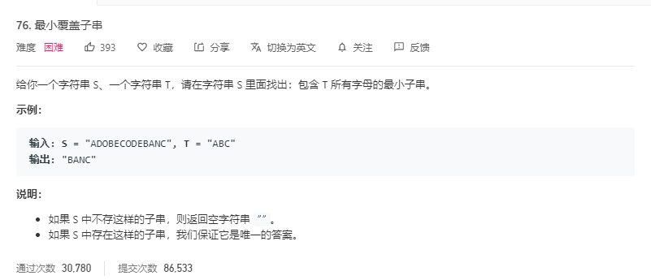

每日算法(LEETCODE,PYTHON3)
2020.3.2 （2 medium）
第3题 无重复的字符的最长字串

思路1 动态规划
我的最初思路：可以采用动态规划法（区间DP），从区间为2的子串开始计算无重复字符的长度，接着计算下个更大的区间，依次类推，直到区间长度等于字符串长度。
空间复杂度优化：这道题的动态规划状态矩阵中，可以发现有一半的空间（对角线以下）全部为0，所以可以压缩。
时间复杂度优化：分析后发现，这道题其实不需要动态规划，因为本质上没有重叠子问题。我尝试了两层循环遍历字符串的所有子串，一旦出现重复就可以跳出与当前最大长度比较，后面的子串不用再比较了，必有重复的字符。时间复杂度$O(N^2)$
思路2 滑动窗口法（字符串题目的常用方法，之前在TCP协议中学习过）
使用左右两个指针维护一个无重复字符的窗口，两个指针初始都在0处。通过右指针不断向右延伸添加新的字符，并记录当前窗口大小，每次与当前最大值比较，如果大于当前最大值，则可以更新。当窗口延伸至新字符已存在于窗口内时。把窗口左侧的字符不断移除（左指针收缩），直到当前窗口无重复子串。继续滑动窗口，直到右指针触及字符串尾部，此时可以输出当前最大长度即可。
滑动窗口法减少了对字符串的重复遍历。
class Solution:
def lengthOfLongestSubstring(self, s: str) -> int:
if not s:return 0 #字符串为空的处理
left = 0
lookup = []
n = len(s)
max_len = 0
cur_len = 0
for i in range(n):
cur_len += 1
if s[i] in lookup:
pos=len(lookup)-lookup[::-1].index(s[i]) #寻找重复字符出现在窗口内的最后一次位置，直接将左指针移动到该位置后面即可。
lookup=lookup[pos:]
left += pos
cur_len -= pos
if cur_len > max_len:max_len = cur_len
lookup.append(s[i])
return max_len
第4题 寻找两个有序数组的中位数

思路1 指针遍历
我的方法：归并排序的思想，通过设置两个指针对两个有序数组进行归并排序，若已排序到中位数位置，则输入当前指针指向的数。
缺点：时间复杂度$O(M+N)$，较高。空间复杂度可以优化至$O(1)$，即只存当前数和前一个数。
要想获得log级别的时间复杂度，需要使用二分法或者堆。
class Solution:
def findMedianSortedArrays(self, nums1: List[int], nums2: List[int]) -> float:
mid_pos=(len(nums1)+len(nums2)-1)/2
p=0
q=0
li=[]
count=-1
while (p!=len(nums1))and(q!=len(nums2)):
if (nums1[p]<=nums2[q]):
li.append(nums1[p])
count+=1
p+=1
if (count>=mid_pos):
if mid_pos%1!=0:
return (li[-1]+li[-2])/2
else:
return li[-1]
else:
li.append(nums2[q])
count+=1
q+=1
if (count>=mid_pos):
if mid_pos%1!=0:
return (li[-1]+li[-2])/2
else:
return li[-1]
if (p==len(nums1)):
for i in range(q,len(nums2)):
li.append(nums2[i])
count+=1
if (count>=mid_pos):
if mid_pos%1!=0:
return (li[-1]+li[-2])/2
else:
return li[-1]
elif (q==len(nums2)):
for i in range(p,len(nums1)):
li.append(nums1[i])
count+=1
if (count>=mid_pos):
if mid_pos%1!=0:
return (li[-1]+li[-2])/2
else:
return li[-1]
思路2 递归二分
为了使时间复杂度指数倍地下降，我们以数组[1，3，4，9]和[1，2，3，4，5，6，7，8，9，10]为例。计算得知：（1+14）/2=7.5，所以二者合并后的中位数为：第7小数和第8小数的平均值。
首先，我们学习一种二分法求解两个有序数组合并后第k小的数的方法，我们以第7小数为例：
1.先计算7整除2的商为3，然后比较第一个数组和第二个数组的第3个数（如果某个数组的元素不足3个，则比较它的最后一个数）。将较小的那个数及之前所有的数从所在的数组中去除。（此时它们必在合并后前6小的数中，具体证明可以自己推导一遍）。
2.此时，求解第7小的数变为：在更新后的两个数组中求解第4小的数（因为已经确定了3个）。
3.计算4整除2的商为2，然后比较两个数组的第2个数，与第1步中类似，将较小的数及之前的所有数从所在数组中删除。
4.此时，求解第4小的数变为：在更新后的两个数组中求解第2小的数（因为又确定了2个）。
5.重复以上过程，直到问题变为求解第1小的数，这时比较两个数组中的第1个数，返回较小值即可。
通过以上算法，我们可以用二分删除法计算出合并后第7小数和第8小数，然后便可计算中位数。
- 时间复杂度:每进行一次循环，我们就减少 k/2 个元素，所以时间复杂度是 $O(log(k))$，而 k=（m+n）/2，所以最终的复杂也就是 O（log（m+n））。
class Solution:
def findk(self,nums1,nums2,k):#求解合并后第k小数
m=k//2
if (len(nums1)>len(nums2)):#保证第一个数组较小
return self.findk(nums2,nums1,k)
if (len(nums1)==0):#如果第一个数组为空，直接返回第二个数组的第k个数即可
return nums2[k-1]
i=min(len(nums1),m)#防止第一个数组长度不足m
if (k==1):#如果求解第1小数，则直接比较二者第1个数即可
return min(nums1[0],nums2[0])
if (nums1[i-1]>nums2[m-1]):#删除第二个数组的前m个数，再递归查找
return self.findk(nums1,nums2[m:],k-m)
else:#删除第一个数组的前i个数，再递归查找
return self.findk(nums1[i:],nums2,k-i)
def findMedianSortedArrays(self, nums1: List[int], nums2: List[int]) -> float:
if (len(nums1)+len(nums2)+1)%2!=0:#数组总长为偶数
return (self.findk(nums1,nums2,int((len(nums1)+len(nums2)+1)/2))+self.findk(nums1,nums2,int((len(nums1)+len(nums2)+1)/2)+1))/2
else:#数组总长为奇数
return self.findk(nums1,nums2,int((len(nums1)+len(nums2)+1)/2))
- 空间复杂度:O（1）。因为这里使用了尾递归！
什么是尾递归
以递归方式实现阶乘函数的实现：
int recsum(int n) {
if (n < 0)
return 0;
else if(n == 0 || n == 1)
return 1;
else
return n * fact(n - 1);
}
以尾递归方式实现阶乘函数的实现：
int tailrecsum(int n, int res=0)
{
if (n < 0)
return 0;
else if(n == 0)
return res;
else
return facttail(n - 1, n + res);
}
非尾递归，下一个函数结束以后此函数还有后续，所以必须保存本身的环境以供处理返回值。
尾递归，进入下一个函数不再需要上一个函数的环境了，得出结果以后直接返回。
尾递归的判断标准是函数运行最后一步是否调用自身，而不是是否在函数的最后一行调用自身。
上述例子中：
递归方式的倒数第二步是调用自身求解recsum（n-1），而最后一步是将recsum（n-1）的结果与n相乘并返回，所以rescum(n)的运算依赖于rescum（n-1）的运算。需要将本层函数压栈保存，当计算完最后一层后，再进行层层返回，得出结果。
尾递归方式的最后一步就是调用自身求解n-1时的结果，并将当前层的结果作为参数传入下一层，不需要再返回当前层进行运算。下层计算结果对上层“无用”（上一层运算已经做完，不依赖后续的递归），为了效率，可以直接将下一层需要的空间覆盖在上一层上。
总结：
尾递归，比线性递归多一个参数，这个参数是上一次调用函数得到的结果；所以，关键点在于，尾递归每次调用都在收集结果，避免了线性递归不收集结果只能依次展开消耗内存的坏处。
使用尾递归可以带来一个好处：因为进入最后一步后不再需要参考外层函数（caller）的信息，因此没必要保存外层函数的stack，递归需要用的stack只有目前这层函数的，因此避免了栈溢出风险。
本题中，所有递归调用都是当前层递归的最后一步，所以不需要额外的栈空间保存当前层，时间复杂度为O（1）。
2020.3.3 （2 medium）
第5题 最长回文子串

思路1：
区间动态规划+状态空间压缩，利用区间首尾字符是否相等，且去除首尾字符后的子串是否为回文串，来判断当前区间是否为回文子串。
时间复杂度：$O(N^2)$
空间复杂度：$O(N^2)$（可以压缩一半）
思路2：
中心扩展法，不需要额外的状态矩阵。对于一个长度为n的字符串，有2n-1个中心（奇偶回文串分类讨论）可以选取，由中心向两侧扩散寻找该中心所能构成的最长回文子串，若大于当前最大值，则将最大值替换为当前长度。
时间复杂度：$O(N^2)$
空间复杂度：$O(1)$
class Solution:
def longestPalindrome(self, s: str) -> str:
max_length=''
for i in range(len(s)):
if (i!=len(s)-1):
if len(self.expandcenter(s,i,i))>len(max_length):
max_length=self.expandcenter(s,i,i)
if len(self.expandcenter(s,i,i+1))>len(max_length):
max_length=self.expandcenter(s,i,i+1)
else:
if len(self.expandcenter(s,i,i))>len(max_length):
max_length=self.expandcenter(s,i,i)
return max_length
def expandcenter(self,s,l,r):#中心扩展法向两侧搜索判断
if (l==r):#奇回文串
length=1
while True:
l-=1
r+=1
if (l>=0)and(r<=len(s)-1)and(s[l]==s[r]):
length+=2
else:
return s[l+1:r]
else:#偶回文串
length=0
while True:
if (l>=0)and(r<=len(s)-1)and(s[l]==s[r]):
length+=2
else:
return s[l+1:r]
l-=1
r+=1
进阶算法：
Manacher算法，时间复杂度只有$O(N)$，但比较复杂。可以参考https://www.jianshu.com/p/392172762e55
第6题 Z 字形变换
思路1：
通过观察变换前后的字符串，利用规律求解，直接使用下标运算。
class Solution:
def convert(self, s: str, numRows: int) -> str:
a=2*numRows-2
result=''
if (a==0):
return s
for i in range(numRows):
t=i
while(t<len(s)):
result+=s[t]
delta=2*(numRows-i-1)
if (i!=0) and (t+delta<len(s)) and(delta>0):
result+=s[t+delta]
t+=a
return result
时间复杂度：$O(N)$
空间复杂度：$O(1)$
思路2
按顺序遍历字符串，并设置与行数相等的数组。遍历时，按照Z字形变化的格式放入对应的数组（行数先加1，遍历到底部再减1，遍历到顶部再加1，直到遍历完）
class Solution:
def convert(self, s: str, numRows: int) -> str:
if numRows < 2: return s
res = ["" for _ in range(numRows)]
i, flag = 0, -1
for c in s:
res[i] += c
if i == 0 or i == numRows - 1: flag = -flag
i += flag
return "".join(res)
2020.3.4 （1 hard 1 medium）
第10题 正则表达式匹配
思路:
本题可以用递归求解，但时空复杂度很高。
考虑到本题符合动态规划的两个基本要求：（1）重叠子问题，（2）最优子结构。所以本题可以使用动态规划来求解。
解决可递归问题的三种方法：
- 递归：自顶向下，代码简单，但是复杂度高，可能会进行重复的计算，同时会使用大量的栈空间。
- 备忘录：自顶向下，将递归中的子问题求解结果保存起来，防止重复计算，降低了时间复杂度，但栈空间的消耗依然存在。
- 动态规划：自底向上，使用状态矩阵，由子问题通过状态转移方程递推出最后的结果。
本题中，可以使用状态矩阵$dp(i,j)$表示text[i:]和pattern[j:]是否能匹配。我们可以用更短的字符串匹配问题来表示原本的问题。
当首字母匹配且第二个字母为”*”时，可以尝试转移到匹配0次（目标串不变，模式串变）或1次（目标串变，模式串不变，因为此时可以多次匹配）的状态矩阵。
当首字母不匹配且第二个字母为”*”时，转移到匹配0次（目标串不变，模式串变）的状态矩阵。
首字母匹配且第二个字母不为”*”时，转移到首字母匹配1次（目标串和模式串都变）的状态矩阵。
否则，当前状态为False，即无法匹配。
$dp(-1,-1)$说明此时模式串和目标串完成了全匹配，可以成功，默认为True。
class Solution(object):
def isMatch(self, text, pattern):
dp=[[False for x in range(len(pattern)+1)] for x in range(len(text)+1)]
dp[-1][-1]=True #两个字符串都为空必然匹配
for i in range(len(text),-1,-1): #为什么i从len(text))开始，而j从len(pattern)-1开始：字符串为空，正则表达式不为空，可能匹配成功（存在*），而正则表达式为空，字符串不为空，必然不可能匹配成功
for j in range(len(pattern)-1,-1,-1):
f_match=(i<len(text))and(pattern[j] in [text[i],'.']) #第一个对i的限制条件是为了防止后面访问text[i]时数组越界
if (j+1<len(pattern))and(pattern[j+1]=='*'):
if f_match:
dp[i][j]=dp[i][j+2] or dp[i+1][j]
else:
dp[i][j]=dp[i][j+2]
else:
if f_match:
dp[i][j]=dp[i+1][j+1]
return dp[0][0]
第11题 盛最多水的容器

思路:
双指针法（这种从两端向内收缩的双指针我叫做双侧指针，如第3题中滑动窗口的同一侧出发的指针我叫做快慢指针）。
由于容器的容积只与短板有关，我们可以使用两个指针从数组的两侧每一次向内收缩短板，计算当前的容积，直到两个指针相交。
为什么只收缩短板：如果收缩长板，那么移动后的板长要么小于移动前的短板长度，要么大于短板长度，前者会使容积变小，后者会使容积不变，所以我们只有移动短板才可能使容积变大。
时间复杂度：$O(N)$
空间复杂度：$O(1)$
class Solution:
def maxArea(self, height: List[int]) -> int:
max_v=0
left=0
right=len(height)-1
while (left<right):
v=min(height[left],height[right])*(right-left)
if v>max_v:
max_v=v
if (height[left]<height[right]):
left+=1
else:
right-=1
return max_v
2020.3.5 （4 medium）
第12题 整数转罗马数字

思路:
贪心算法，每次取当前能够匹配的最大罗马数字进行选择。类似于用最少的纸币凑出整数。
class Solution:
def intToRoman(self, num: int) -> str:
# 把阿拉伯数字与罗马数字可能出现的所有情况和对应关系，放在两个数组中
# 并且按照阿拉伯数字的大小降序排列，这是贪心选择思想
nums = [1000, 900, 500, 400, 100, 90, 50, 40, 10, 9, 5, 4, 1]
romans = ["M", "CM", "D", "CD", "C", "XC", "L", "XL", "X", "IX", "V", "IV", "I"]
index = 0
res = ''
while index < 13:
# 注意：这里是等于号，表示尽量使用大的"面值"
while num >= nums[index]:
res += romans[index]
num -= nums[index]
index += 1
return res
第15题 三数之和
思路:
在一个有序数组中求解两个数之和，可以使用暴力遍历的方法，但时间复杂度很高。在这里，我们可以使用双侧指针法，先在数组两端各固定一个指针。当两数之和小于target时，左指针加1（由于是有序数组，会使和变大），当两数之和大于target时，右指针减1，等于target时，保存结果，并左右指针同时向内收缩。
那么，知道了两数之和问题的解决方案后，我们可以求解三数之和（本质上，任意n数之和都可以采取相同的方法）。我们先对数组进行排序，然后固定一个数，便可将问题转化为两数之和，接着对于该数之后的所有数进行两数之和的求解。求解完成后，我们可以接着固定下一个数，直到求出所有结果。
要注意的问题：
- 结果的去重（求解两数之和时，相同的数字不应重复使用。同时，固定的数若等于上个数，则他的所有情况都被上个数的遍历所包含，也可以跳过）。
性能的提升（剪枝，当右指针的数小于0时或者固定的数大于0时，三数之和必定不等于0，因为此时三个数都大于0或者都小于0）
时间复杂度：$O(N^2)+O(NlogN)=O(N^2)$
空间复杂度：$O(1)$
class Solution {
public static List<List<Integer>> threeSum(int[] nums) {
List<List<Integer>> ans = new ArrayList();
Arrays.sort(nums); # 排序
int len = nums.length;
if(nums == null || len < 3) return ans;
for (int i = 0; i < len ; i++) {
if(nums[i] > 0) break; // 如果当前数字大于0，则三数之和一定大于0，所以结束循环
if(i > 0 && nums[i] == nums[i-1]) continue; // 去重
int L = i+1;
int R = len-1;
while(L < R){
if (nums[R]<0){
break;
}
int sum = nums[i] + nums[L] + nums[R];
if(sum == 0){
ans.add(Arrays.asList(nums[i],nums[L],nums[R]));
while (L<R && nums[L] == nums[L+1]) L++; // 去重
while (L<R && nums[R] == nums[R-1]) R--; // 去重
L++;
R--;
}
else if (sum < 0){
while (L<R && nums[L] == nums[L+1]){
L++; // 去重;
}
L++;
}
else if (sum > 0) {
while (L<R && nums[R] == nums[R-1]){
R--; // 去重
} // 去重
R--;
}
}
}
return ans;
}
}
第16题 最接近的三数之和

思路:
与第15题几乎没有区别，只是双指针收缩时，每次记录当前的三数之和，看与结果的差值是否为当前最小，最小则修改当前的最接近的三数之和。当差值为0时可以直接返回。
class Solution:
def threeSumClosest(self, nums: List[int], target: int) -> int:
nums.sort()
closest=nums[0]+nums[1]+nums[2]
diff=abs(closest-target)
for i in range(len(nums)-2):
if i>0 and nums[i]==nums[i-1]:
continue
L=i+1
R=len(nums)-1
while (L<R):
summa=nums[i]+nums[L]+nums[R]
if abs(summa-target)<diff:
closest=summa
diff=abs(closest-target)
if (summa>target):
R-=1
elif (summa<target):
L+=1
else:
return summa
return closest
第18题 四数之和

思路:
任意n数之和都求解，都可以先固定一个数，转化为n-1数之和问题，逐步转化，直到最后变为求解二数之和。这里的四数之和也是类似的道理，其去重的思想与三数之和也是一样的。
class Solution {
public static List<List<Integer>> fourSum(int[] nums,int target) {
List<List<Integer>> ans = new ArrayList();
Arrays.sort(nums); // 排序
int len = nums.length;
if(nums == null || len < 4) return ans;
for (int i = 0; i < len-3 ; i++) {//多固定了一个数，将问题转化为内部的三数之和
if(i > 0 && nums[i] == nums[i-1]) continue; // 去重
for (int j =i+1;j<len-2;j++){
if(j > i+1 && nums[j] == nums[j-1]) continue; // 去重
int L = j+1;
int R = len-1;
while(L < R){
int sum = nums[i] + nums[j]+nums[L] + nums[R];
if(sum == target){
ans.add(Arrays.asList(nums[i],nums[j],nums[L],nums[R]));
while (L<R && nums[L] == nums[L+1]) L++; // 去重
while (L<R && nums[R] == nums[R-1]) R--; // 去重
L++;
R--;
}
else if (sum < target) L++;
else if (sum > target) R--;
}
}
}
return ans;
}
}
2020.3.6 （2 medium）
第17题 电话号码的字母组合
思路1:
打表+队列，类似于BFS。
class Solution:
def letterCombinations(self, digits: str) -> List[str]:
dic={'2':['a','b','c'],'3':['d','e','f'],'4':['g','h','i'],'5':['j','k','l'],'6':['m','n','o'],'7':['p','q','r','s'],'8':['t','u','v'],'9':['w','x','y','z']}
result=[]
for char in digits:
if result==[]:
result=dic[char]
else:
l=len(result)
for i in range(l):
st=result[0]
result=result[1:]#出队
for c in dic[char]:
result.append(st+c)#入队
return result
时间复杂度:$O(3^M+4^N)$
思路2:
这里也可以使用回溯+递归的方法，将其看作是一个类似于全排列的问题。
class Solution:
def letterCombinations(self, digits):
"""
:type digits: str
:rtype: List[str]
"""
phone = {'2': ['a', 'b', 'c'],
'3': ['d', 'e', 'f'],
'4': ['g', 'h', 'i'],
'5': ['j', 'k', 'l'],
'6': ['m', 'n', 'o'],
'7': ['p', 'q', 'r', 's'],
'8': ['t', 'u', 'v'],
'9': ['w', 'x', 'y', 'z']}
def backtrack(combination, next_digits):
# if there is no more digits to check
if len(next_digits) == 0:
# the combination is done
output.append(combination)
# if there are still digits to check
else:
# iterate over all letters which map
# the next available digit
for letter in phone[next_digits[0]]:
# append the current letter to the combination
# and proceed to the next digits
backtrack(combination + letter, next_digits[1:])//这里可以看作是进行了回溯，因为直接使用了新的字符串，所以不用恢复状态
output = []
if digits:
backtrack("", digits)
return output
第19题 删除链表的倒数第N个节点
思路：
快慢指针法+dummy head。
快指针在前遍历链表，慢指针在后用于保存快指针的前第N个节点。当快指针遍历到链表的尾部，则可以使用慢指针删除节点。这里需要注意，当要删除的节点是第一个节点时，若使用题目中给出的头指针，需要分类讨论进行操作。为了不进行分类讨论，我们在链表开头处添加一个空的头结点（dummy head）。
时间复杂度:$O(N)$
空间复杂度:$O(1)$
# Definition for singly-linked list.
# class ListNode:
# def __init__(self, x):
# self.val = x
# self.next = None
class Solution:
def removeNthFromEnd(self, head: ListNode, n: int) -> ListNode:
fore_head=ListNode(0)
fore_head.next=head
p=fore_head
back_n=fore_head
while (p.next!=None):
p=p.next
if (n>0):
n-=1
elif (n==0)://n减到0时，才能移动慢指针，否则说明前第n个元素越界
back_n=back_n.next
back_n.next=back_n.next.next
return fore_head.next
2020.3.7 （1 medium 1 hard）
第22题 括号生成

思路:
二叉树的先根遍历+剪枝。使用count记录当前字符串内左括号个数减去右括号个数的值，当count<0或者count>n，n为剩余的目标括号对数时，进行剪枝。
class Solution:
def generateParenthesis(self, n: int) -> List[str]:
count=0
st=''
result=[]
def dp(count,n,st):
if (0<=count<=n):#剪枝
if (n==0):#满足要求
result.append(st)
else:#先根遍历
dp(count-1,n-1,st+')')
dp(count+1,n,st+'(')
dp(count,n,st)
return result
第23题 合并K个排序链表

思路:
分治法，类似于标准归并排序的思想。先将相邻的链表两两合并，得到个数为原来一半的新链表，接着继续两两合并，重复直到只剩下最后一个链表，即为最终的结果。
两两合并的方法，采用的是双指针法，即两个链表各设置一个指针，用于比较和插入结果链表。
- 时间复杂度：$O(NlogK)$，N是所有链表中元素的总和，K是链表个数。
# Definition for singly-linked list.
# class ListNode:
# def __init__(self, x):
# self.val = x
# self.next = None
class Solution:
def mergeKLists(self, lists: List[ListNode]) -> ListNode:
def merge(list1,list2):#两两合并
p=list1
q=list2
head=ListNode(0)
m=head
while (p!=None) and (q!=None):
if p.val<q.val:
m.next=p
m=m.next
p=p.next
else:
m.next=q
m=m.next
q=q.next
if (p==None):
m.next=q
elif (q==None):
m.next=p
return head.next
amount = len(lists)
interval = 1
while interval < amount:#两两合并
for i in range(0, amount - interval, interval * 2):
lists[i] = merge(lists[i], lists[i + interval])
interval *= 2
return lists[0] if amount > 0 else lists
为什么不使用逐一合并的算法呢？那样合并的过程写起来会很简单？
逐一合并的时间复杂度：$O(NK)$
因为这里的两两排序实际上运用了分治法的思想，逐一合并的话，每一次合并在最坏的情况下都需要比较N个节点，而两两合并，每一轮合并的最坏情况才需要比较N个节点。逐一合并需要进行（K-1）次，而两两合并仅需要进行（logN）轮，所以时间复杂度大大降低。

2020.3.8 （1 hard 1 medium）
第24题 两两交换链表中的节点

思路:
本质上就是两个一组翻转链表。可以使用头插法+dummy head。使用三个指针pre、p、q，将q结点插入至p结点之前，即完成了一次交换。然后移动指针至下两个节点处，继续交换。
# Definition for singly-linked list.
# class ListNode:
# def __init__(self, x):
# self.val = x
# self.next = None
class Solution:
def swapPairs(self, head: ListNode) -> ListNode:
h=ListNode(0)#dummy head
h.next=head
pre=h
p=head
if (head==None):
return head
else:
q=p.next
while (p!=None)and(q!=None):
p.next=q.next
q.next=p
pre.next=q
#两个一组翻转链表
pre=p
p=p.next
if p!=None:
q=p.next
#移动至下两个节点进行操作
return h.next
第25题 K 个一组翻转链表
思路:
上一题的扩展，使用dummy head+头插法即可。
- pre指针：当前组的第一个节点的前一个节点，用于插入元素。
- q指针： 要插到头部的那个节点。
- p指针： q节点的前一个节点，用于删除q节点。
# Definition for singly-linked list.
# class ListNode:
# def __init__(self, x):
# self.val = x
# self.next = None
class Solution:
def reverseKGroup(self, head: ListNode, k: int) -> ListNode:
h=ListNode(0)
h.next=head
pre=h
p=head
count=0
t=pre.next
while(t!=None):#统计当前链表的长度
count+=1
t=t.next
if (head==None):
return head
else:
q=p.next
while (pre!=None) and (p!=None) and (q!=None):
if (count<k):#当前链表的剩余长度是否可以进行翻转
return h.next
for i in range(k-1):
p.next=q.next
q.next=pre.next
pre.next=q
q=p.next
#当前组内的节点进行头插法翻转
pre=p
p=pre.next
if p==None:
return h.next
q=p.next
count-=k
#指针移动至下一组开始处
return h.next
2020.3.9 （3 easy）
第26题 删除排序数组中的重复项

思路:
快慢指针法，慢指针指向当前数组内无重复的子序列的最后一项，快指针用于遍历整个数组。
- 当快指针指向的元素与慢指针指向的元素不相等时，将该元素加入至慢指针维护的无重复子序列中，慢指针和快指针都加1。
- 当元素相等时，快指针直接遍历下一个元素。
- 时间复杂度：$O(N)$
class Solution:
def removeDuplicates(self, nums: List[int]) -> int:
slow=0
for fast in range(1,len(nums)):
if (nums[slow]!=nums[fast]):
slow+=1
nums[slow]=nums[fast]
return slow+1#由于慢指针指向的是子序列最后一项的下标，子序列长度需要加1
第27题 移除元素

思路:
同样使用快慢指针法，快指针用于遍历，慢指针维护一个没有target元素的子序列，指向该子序列末尾的后一个元素。
class Solution:
def removeElement(self, nums: List[int], val: int) -> int:
slow=0
for fast in range(len(nums)):
if (nums[fast]!=val):
nums[slow]=nums[fast]
slow+=1
return slow
这里，慢指针与26题有一些区别，27题的慢指针指向的是符合要求的子序列的后一项，而26题是最后一项。这是因为26题中，单个元素不可能重复，而27题中，单个元素也可能是需要被移除的。
第28题 实现 strStr()
思路:
KMP算法，具体可以看这里：KMP算法总结
2020.3.10 （1 hard 1 medium）
第29题 两数相除

思路:
我们最初很容易可以想到使用累减法来解决除法问题，但这会很慢，所以我们需要使用递归方法加速累减。
递归的具体过程是，在递归函数内部，我们在保证当前除数不大于被除数的情况下，使除数不断翻倍，并记录倍数。当除数即将大于当前被除数时，我们停止翻倍，并记录下当前的倍数，加到商上。此时，我们将除数减去当前的被除数，剩余的结果重复之前的过程，直到剩余的数小于原始的除数。
本质上，这题的思想类似于快速幂算法，都是使用翻倍来加速，利用二分思想优化至logN级别的时间复杂度。因为一个一个减肯定不如翻倍翻倍减快速。
特别的，这道题还需要考虑补码的机制问题，当被除数等于$-2^31$时，商最大只能等于$2^31-1$。
class Solution:
def divide(self, dividend: int, divisor: int) -> int:
if dividend==0:#防止除数为0
return 0
if divisor==1:#除数为1，直接返回结果，加速运算
return dividend
if divisor==-1:#除数为-1，直接返回结果的负数，加速运算
if dividend==-2**31:#考虑integer的溢出
return 2**31-1
else:
return -dividend
flag=-1
if ((dividend>0) and (divisor>0)) or ((dividend<0) and (divisor<0)):#考虑符号
flag=1
dividend=abs(dividend)
divisor=abs(divisor)
def div(result,a):#递归求解
if (a<divisor):
return result
count=1
result+=count
b=divisor
a-=b
while (b+b)<=a:#翻倍累减
count+=count
result+=count
b+=b
a-=b
return div(result,a)#尾递归，减少栈空间调用
return flag*(div(0,dividend))
第30题 串联所有单词的子串
思路:
滑动窗口法+哈希表。
由于题目中提到了所有单词等长，那么我们对于n个长度为k的单词可以维护一个长度为k*n的滑动窗口。接着，我们利用哈希表建立words列表中的单词和单词数目的映射。然后，我们可以使用滑动窗口进行滑动匹配，每次移动一个单词的长度。对于窗口内部，我们统计每k长度的字符串，若出现了不在哈希表的键中的字符串，或者字符串出现的次数大于哈希表中对应的值时，说明此窗口失配，进行下一次匹配，否则，记录下窗口起始位置。
class Solution:
def findSubstring(self, s: str, words: List[str]) -> List[int]:
dic={}
result=[]
if s=="" or words==[]:#目标串或者待匹配列表为空
return []
for w in words:#建哈希表（字典）
if w in dic.keys():
dic[w]+=1
else:
dic[w]=1
l=len(words[0])
window=l*len(words)
for i in range(len(s)-window+1):#滑动匹配
end=i+window
tmp=dic.copy()
flag=1
for j in range(i,end,l):
w=s[j:j+l]
if w not in tmp.keys():
flag=0
break
tmp[w]-=1
if tmp[w]<0:
flag=0
break
if flag:
result.append(i)
return result
2020.3.11 （2 medium 1 hard）
第31题 下一个排列

思路:
核心思想：
- 我们希望下一个数比当前数大，这样才满足“下一个排列”的定义。因此只需要将后面的「大数」与前面的「小数」交换，就能得到一个更大的数。比如 123456，将 5 和 6 交换就能得到一个更大的数 123465。
- 我们还希望下一个数增加的幅度尽可能的小，这样才满足“下一个排列与当前排列紧邻“的要求。为了满足这个要求，我们需要：
- 在尽可能靠右的低位进行交换，需要从后向前查找
- 将一个 尽可能小的「大数」 与前面的「小数」交换。比如 123465，下一个排列应该把 5 和 4 交换而不是把 6 和 4 交换
- 将「大数」换到前面后，需要将「大数」后面的所有数重置为升序，升序排列就是最小的排列。以 123465 为例：首先按照上一步，交换 5 和 4，得到 123564；然后需要将 5 之后的数重置为升序，得到 123546。显然 123546 比 123564 更小，123546 就是 123465 的下一个排列
class Solution:
def nextPermutation(self, nums: List[int]) -> None:
"""
Do not return anything, modify nums in-place instead.
"""
def swap(a,b):#交换数组中的两个元素
temp=nums[a]
nums[a]=nums[b]
nums[b]=temp
p=len(nums)-1
while (p>0):
if (nums[p]>nums[p-1]):从后向前遍历，找到从后向前看的第一个下降的位置
min_pos=p
for i in range(len(nums)-1,p,-1):#搜索最小的大数并交换
if (nums[i]>nums[p-1]):
min_pos=i
break
swap(min_pos,p-1)
for i in range(int((len(nums)-p)/2)):#原地翻转，将大数后所有数重置为升序
swap(p+i,len(nums)-i-1)
break
else:
p-=1
if (p<=0):#如果为降序数组，则重置为升序数组
nums.sort()
return nums
这类题一定要把情况自己模拟一遍，寻找下一个转移的规律。
第32题 最长有效括号

思路:
双向滑动窗口。
使用双指针维护一个滑动窗口。先从左向右滑动窗口，左右指针初始为0，使用一个变量count来存储当前窗口内左括号数量减去右括号数量的值。右指针不断向前遍历，当遍历到当前窗口内count<0时，将左右指针都移动到当前右指针的下一个位置，重置窗口，当count==0时，使用当前窗口长度比较并尝试更新最大长度，当count>0时，右指针继续向前遍历。
上述滑动完成后，再反向从右往左滑动一次窗口。此时的结果即为最大长度。
class Solution:
def longestValidParentheses(self, s: str) -> int:
p=0
q=0
count=0
max_len=0
if (len(s)<2):
return 0
while (q<len(s)):
if (s[q]=="("):
count+=1
elif (s[q]==")"):
count-=1
if (count<0):
q+=1
p=q
count=0
else:
if (count==0):
if (q-p+1)>max_len:
max_len=q-p+1
q+=1
#从左向右滑动
p=len(s)-1
q=len(s)-1
count=0
while (p >=0):
if (s[p] == "("):
count += 1
elif (s[p] == ")"):
count -= 1
if (count > 0):
p-= 1
q = p
count = 0
else:
if (count == 0):
if (q - p + 1) > max_len:
max_len = q - p + 1
p-= 1
#从右向左滑动
return max_len
第33题 搜索旋转排序数组

思路:
由于题目要求时间复杂度在logN级别，所以必须是用二分法进行查找。但我们知道二分查找只适用于有序数组，所以我们需要使用嵌套二分。
首先，我们将数组从中间一分为二，根据旋转排序数组的性质，必然至少有一半有序。我们先判断左半数组是否有序，若有序，判断目标是否在它的范围内，若在，则在左半数组中二分查找，而不在，则去右半数组中二分查找。否则，即为右半数组有序，若目标在范围内，则在右半数组中二分，否则去左半数组中二分。
class Solution:
def search(self, nums: List[int], target: int) -> int:
left=0
right=len(nums)-1
while (left<=right):
mid=(left+right)//2
if nums[mid]==target:#中间数为目标
return mid
if (nums[left]<=nums[mid]):#左半数组有序
if (nums[left]<=target<=nums[mid]):#目标在左半数组中
right=mid-1
else:
left=mid+1
else:#右半数组有序
if (nums[mid]<=target<=nums[right]):#目标在右半数组中
left=mid+1
else:
right=mid-1
return -1
2020.3.12 （2 medium 1 hard）
第34题 在排序数组中查找元素的第一个和最后一个位置

思路:
由于时间复杂度控制在logN级别，所以很明显需要使用二分查找。
我们以二分查找获取左边界为例进行说明。首先，我们使用的是常规二分查找的框架，即比较目标与当前区间的中位数。不过常规二分查找是当目标大于中位数时进入右区间查找，小于中位数时进入左区间查找，等于中位数时返回当前中位数的位置。不同的是，此时我们需要查找的是元素的第一个位置。所以，我们需要进行这样的修改：当中位数等于目标时，目标元素的起始位置很明显要么在中位数处，要么在中位数左侧区间，此时我们直接进入左区间查找即可，其余的做法和常规二分查找一样。你可能会疑惑万一第一个位置就是中位数怎么办。不用担心，当遍历完左区间后无法再次找到目标元素，此时会在左区间的末尾尝试进入右区间，又回到了我们原先的中位数处。
二分查找右边界的方法同理，只是将中位数等于目标时改为进入右区间查找即可。
注意，当得到左右边界后还要判定是否合法。
通过两次二分，我们可以在$O(logN)$的时间复杂度内完成查找。
class Solution:
def searchRange(self, nums: List[int], target: int) -> List[int]:
if nums==[]:
return [-1,-1]
def getLeftBound(nums,target):#查找左边界
left=0
right=len(nums)-1
while (left<=right):
mid=(left+right)//2
if (nums[mid]>=target):
right=mid-1
else:
left=mid+1
if (left>=0) and (left<len(nums)) and (nums[left]==target):#左边界合法
return left
return -1
def getRightBound(nums,target):#查找右边界
left=0
right=len(nums)-1
while (left<=right):
mid=(left+right)//2
if (nums[mid]<=target):
left=mid+1
else:
right=mid-1
if (right>=0) and (right<len(nums)) and (nums[right]==target):#右边界合法
return right
return -1
return [getLeftBound(nums,target),getRightBound(nums,target)]
第36题 有效的数独
思路:
使用三个二维数组，分别存放每一行、每一列、每一个子数独当前放置的值。依次遍历这81个格子，每次遍历时将非空格子中的数放入对应的行、列、子数独的列表中。若出现了重复，则说明当前数独无效。
- 时间复杂度：$O(1)$
- 空间复杂度：$O(1)$
class Solution:
def isValidSudoku(self, board: List[List[str]]) -> bool:
cols=[[] for x in range(9)]
rows=[[] for x in range(9)]
sons=[[] for x in range(9)]
for i in range(9):
for j in range(9):
if board[i][j]!='.':
if (board[i][j] in cols[j]) or (board[i][j] in rows[i]) or (board[i][j] in sons[(i//3)*3+j//3]):
return False
else:
cols[j].append(board[i][j])
rows[i].append(board[i][j])
sons[(i//3)*3+j//3].append(board[i][j])
return True
第37题 解数独

思路:
递归+回溯。类似的问题还有走迷宫、皇后问题、全排列等，本质的思路都是去使用回溯算法递归的尝试每种可能的情况。
回溯算法模板如下：
def backtrack(…):
if (符合结束条件):
保存结果
else:
for 选择 in 选择列表：
if 选择合法：
进行选择
backtrack(…)#递归进入下一个位置进行选择
撤销选择
本题中，我们对每一个格子进行遍历，如果当前格子非空，我们便在“1”到“9”中选择合法的数字填入当前格子，并进入下一个格子继续选择。如果一直到最后一个格子都可以成功填入数字，则说明解完了数独，可以返回真。如果当前格子无法填入任何数字，则需要回溯至上一层递归函数，去恢复数独的状态，并选择下一个数字尝试填入。
判定当前数独矩阵是否合法，参考第36题即可。
class Solution:
def solveSudoku(self, board) -> None:
"""
Do not return anything, modify board in-place instead.
"""
cols=[[] for x in range(9)]
rows=[[] for x in range(9)]
sons=[[] for x in range(9)]
def could_place(i,j,value):#是否可以在当前格子放置value数字
if (value in cols[j]) or (value in rows[i]) or (value in sons[(i//3)*3+j//3]):
return False
return True
def place(i,j,value):#放置数字
cols[j].append(value)
rows[i].append(value)
sons[(i//3)*3+j//3].append(value)
board[i][j]=value
def remove(i,j,value):#移除数字
cols[j].remove(value)
rows[i].remove(value)
sons[(i//3)*3+j//3].remove(value)
board[i][j]="."
def DFS(i,j):#回溯函数
if i>8:#结束递归条件
return True
if board[i][j]==".":#当前格子是否为空
for value in range(1,10):#遍历选择
value=str(value)
if (could_place(i,j,value)):#如果选择合法
place(i,j,value)#进行选择
if (j==8):#判断是否走到行尾
if not(DFS(i+1,0)):#如果当前可以递归找到解，那么直接返回真，不需要再继续选择，否则回溯继续选择。
remove(i,j,value)
else:
return True
else:
if not(DFS(i,j+1)):
remove(i,j,value)
else:
return True
else:
if (j==8):
return DFS(i+1,0)
else:
return DFS(i,j+1)
return False
for i in range(9):#统计已经存在的数
for j in range(9):
if board[i][j]!='.':
if (board[i][j] in cols[j]) or (board[i][j] in rows[i]) or (board[i][j] in sons[(i//3)*3+j//3]):
return
else:
cols[j].append(board[i][j])
rows[i].append(board[i][j])
sons[(i//3)*3+j//3].append(board[i][j])
DFS(0,0)
2020.3.13 （2 medium）
第39题 组合总和
思路:
递归回溯算法+剪枝
递归组合分解，每次选择候选数组中的一个元素，用目标值减去它。
- 若得到的结果大于0，说明还可以继续分解，将当前选择的元素加入至路径列表，并尝试继续分解。
- 如果当前结果等于0，说明分解成功，将当前选择的元素加入至路径列表，并将当前路径列表加入至结果列表。
- 如果当前结果小于0，说明无法再分解，特别地，当候选数组升序时，后面的元素很明显也无法分解，需要跳出循环。

此外，有可能出现重复的结果，即虽然路径不同，但元素相同。考虑到这一问题，尝试进行剪枝：
- 记录下当前选择的元素的下标，下一次选择元素从该下标开始。
class Solution:
def combinationSum(self, candidates: List[int], target: int) -> List[List[int]]:
result=[]
candidates.sort()
def back(re,index,target):
for i in range(index,len(candidates)):#遍历选择
num=candidates[i]
target_now=target-num
if target_now<0:
break
re.append(num)#选择
if target_now==0:
res=re[:]
result.append(res)
else:
back(re,i,target_now)
re.pop()#回溯恢复
back([],0,target)
return result
第40题 组合总和2

思路:
和上一题类似，依然使用剪枝+递归回溯的思路来做。
有两个区别，一个是候选数组可能会出现重复，我们采用三数之和问题里类似的剪枝思路进行去重。第二个区别是数字不能重复使用，所以递归进行下一次元素的选择时，要从当前元素下标的下一个开始。

class Solution:
def combinationSum2(self, candidates: List[int], target: int) -> List[List[int]]:
result=[]
candidates.sort()
def back(re,index,target):
if (index<len(candidates)):
for i in range(index,len(candidates)):
if i!=index and (candidates[i]==candidates[i-1]):#去重
continue
target_now=target-candidates[i]
if (target_now<0):
break
re.append(candidates[i])
if (target_now==0):
result.append(re[:])
else:
back(re,i+1,target_now)#从下一元素开始遍历，防止数字重复使用
re.pop()
back([],0,target)
return result
2020.3.14 （2 hard 1 medium）
第41题 缺失的第一个正数
思路:
我们很容易想到利用哈希表（即字典）进行统计，然后去寻找第一个缺失的正数。但是考虑到题目的要求为时间复杂度$O(N)$以及常数级别的空间复杂度，我们可以考虑将数组自身作为一个哈希表，对应的哈希函数为:
通过哈希函数，将可以进行映射的数组元素映射到对应位置上，然后依次遍历寻找第一个映射不正确的位置即可。
复杂度分析：
时间复杂度：$O(N)$，这里$N$是数组的长度。
说明：while 循环不会每一次都把数组里面的所有元素都看一遍。如果有一些元素在这一次的循环中被交换到了它们应该在的位置，那么在后续的遍历中，由于它们已经在正确的位置上了，代码再执行到它们的时候，就会被跳过。最极端的一种情况是，在第 1 个位置经过这个 while 就把所有的元素都看了一遍，这个所有的元素都被放置在它们应该在的位置，那么 for 循环后面的部分的 while 的循环体都不会被执行。平均下来，每个数只需要看一次就可以了，while 循环体被执行很多次的情况不会每次都发生。这样的复杂度分析的方法叫做均摊复杂度分析。空间复杂度：$O(1)$。
class Solution:
def firstMissingPositive(self, nums: List[int]) -> int:
def swap(pos1,pos2):
nums[pos1],nums[pos2]=nums[pos2],nums[pos1]
size=len(nums)
for i in range(size):
while (0<nums[i]<=size)and (nums[i]!=nums[nums[i]-1]):#当当前位置的数字可以进行哈希映射，并且不在对应位置时，与对应位置的数字交换。如果重复了或者无法映射（不在范围内），则不映射。
swap(i,nums[i]-1)
for i in range(size):#寻找第一个不符合映射规则的位置
if nums[i]!=i+1:
return i+1
return size+1#都符合，那么就输出下一个正数
注:为什么使用nums[i]!=nums[nums[i]-1]来判断而不是i!=nums[i]-1？
因为后者无法处理重复的数字。
第42题 接雨水
思路
双指针+左右各一次遍历。从左向右遍历时，保证左指针指向的是短板。右指针不断向前遍历，每次右指针遇到长板后，计算此时所形成的容器的容积，再将左指针移到右指针处，右指针继续向前遍历。直到右指针遍历到数组末尾。然后再用相同的方式反向搜索一遍即可。将所有容积相加即为答案。
时间复杂度:两次遍历，$O(N)$。
空间复杂度：$O(1)$。
class Solution:
def trap(self, height: List[int]) -> int:
left=0
right=left+1
water=0
while (right<len(height)):#从左向右
if height[right]>=height[left]:
width=right-left-1
tmp=0
for i in range(left+1,right):#减去被柱子占用的体积
tmp-=height[i]
tmp+=width*height[left]
water+=tmp
left=right
right+=1
right=len(height)-1
left=right-1
while (left>=0):#从右向左
if height[left]>height[right]:
width=right-left-1
tmp=0
for i in range(left+1,right):
tmp-=height[i]
tmp+=width*height[right]
water+=tmp
right=left
left-=1
return water
优化
实际上，这里并不需要两次遍历，因为从左向右和从右向左的遍历都会在最高的柱子处停下。所以我们可以同时从两侧开始逼近，每次让左右指针较小的那个移动。
同时，我们可以维护一个left_max和right_max，即左右指针当前遍历到的最高柱。利用它们可以计算当前格子的积水。
class Solution:
def trap(self, height: List[int]) -> int:
left_max=0
right_max=0
left=0
right=len(height)-1
water=0
while left<=right:
if height[left]<height[right]:#确保不会越过山顶
if (height[left]>=left_max):
left_max=height[left]
else:
water+=left_max-height[left]#利用max变量求解当前格的积水
left+=1
else:
if (height[right]>=right_max):
right_max=height[right]
else:
water+=right_max-height[right]
right-=1
return water
数组必有一个 ”山顶“（若有多个高度相同山顶，任取一个即可）。
根据”木桶原理“，山顶左侧的元素的盛水量 ，由左侧最大值决定；山顶右侧元素的盛水量，由右侧最大值决定。
双指针法的两个指针最终会停在 “山顶” 处。
第43题 字符串相乘
大数乘法问题，采取模拟竖式计算的方式求解。使用两个数组来存放两个数字字符串，数组的低位存数字字符串的低位。将第1个数组的第i位与第2个数组的第j位相乘，放入结果数组的第i+j位上。计算完成后，遍历结果数组，将所有大于9的进行进位操作。再反向遍历去掉最末尾的0。最后反向拼接成字符串输出即可。
class Solution:
def multiply(self, num1: str, num2: str) -> str:
numLi1=[int(x) for x in num1[::-1]]
numLi2=[int(x) for x in num2[::-1]]
len1=len(numLi1)
len2=len(numLi2)
res=[0 for x in range(len1+len2)]
for i in range(len1):#模拟两个数字的每一位相乘
for j in range(len2):
res[i+j]+=numLi1[i]*numLi2[j]
for i in range(len1+len2):#进位操作
if res[i]>9:
res[i+1]+=res[i]#10
res[i]%=10
for i in range(len(res)-1,0,-1):#去除结果开头的0
if res[i]==0 :
res.pop()
else:
break
res=[str(x) for x in res[::-1]]
return "".join(res)
- 时间复杂度:$O(MN)$
- 空间复杂度:$O(M+N)$
2020.3.15 （2 hard）
第44题 通配符匹配
思路:
类似于第十题，可以采用相同的动态规划方法处理，甚至比第十题简单一些。由子串的匹配转移到当前串的匹配，直到转移至目标串和模式串的匹配。
class Solution:
def isMatch(self, s: str, p: str) -> bool:
dp=[[False for x in range(len(p)+1)] for x in range(len(s)+1)]
dp[-1][-1]=True
for i in range(len(s),-1,-1):#动态规划
for j in range(len(p)-1,-1,-1):
if p[j]=="*":
if i<len(s):
dp[i][j]=dp[i+1][j] or dp[i][j+1]
else:
dp[i][j]=dp[i][j+1]
else:
if i<len(s) and(p[j]=="?" or p[j]==s[i]):
dp[i][j]=dp[i+1][j+1]
return dp[0][0]
- 时间复杂度:$O(MN)$
- 空间复杂度:$O(MN)$
更好的思路：
有一种更好的思路来进行匹配，降低了时空复杂度，使用的是回溯和贪心的思想。具体看这里:40题解
第45题 跳跃游戏2

思路:
贪心思路。在当前可以跳到的下一跳候选位置中，选择继续跳跃能够到达最远位置的候选位置，贪心地进行跳跃。当即将跳到数组末尾或者超过数组末尾时，返回当前步数加1，否则继续跳跃。
class Solution:
def jump(self, nums: List[int]) -> int:
now=0#当前位置
count=0#步数
l=len(nums)-1#数组末尾位置
if l==0:
return count
while True:
if now+nums[now]>=l:#即将到达末尾
return count+1
farthest=0
next=0
for i in range(now+1,now+nums[now]+1):#贪心地选择能够抵达更远地方的下一跳位置
farthest_now=i+nums[i]
if farthest_now>farthest:
farthest=farthest_now
next=i
now=next
count+=1
2020.3.16 （4 medium）
第46题 全排列

思路:
深度优先搜索+回溯。
为了防止重复遍历数字，使用一个已访问矩阵来存储数字是否已被访问。
class Solution:
def permute(self, nums: List[int]) -> List[List[int]]:
result=[]
visited=[False for x in nums]
def dfs(re):
if (len(re)==len(nums)):
result.append(re)
else:
for i in range(len(nums)):
if (visited[i]==False):
re.append(nums[i])
visited[i]=True
dfs(re[:])
re.pop()
visited[i]=False
dfs([])
return result
需要注意的是，一般回溯法中将路径列表添加至结果时，需要添加一个深拷贝，而不能是引用。否则它将跟随回溯变化。
第47题 全排列2
思路:
与上一题基础的全排列类似，我们依然使用的是DFS+backtrack算法，但是在这里我们需要进行剪枝处理，去重。
去重的思路是：先排序，对于多个未访问的连续的相同数字，我们每次只选择第一个进行深度优先搜索，防止重复的搜索。
class Solution:
def permuteUnique(self, nums: List[int]) -> List[List[int]]:
result=[]
visited=[False for x in nums]
nums.sort()
def dfs(re):
if (len(re)==len(nums)):
result.append(re)
else:
for i in range(len(nums)):
if (i!=0 and nums[i]==nums[i-1] and visited[i-1]==False):#剪枝处理
continue
if (visited[i]==False):
re.append(nums[i])
visited[i]=True
dfs(re[:])
re.pop()
visited[i]=False
dfs([])
return result
第48题 旋转图像

思路:
先对数组进行转置，再对其进行左右翻转。
需要进行原地修改。
class Solution:
def rotate(self, matrix: List[List[int]]) -> None:
"""
Do not return anything, modify matrix in-place instead.
"""
for i in range(len(matrix)):
for j in range(i+1,len(matrix[0])):
tmp=matrix[i][j]
matrix[i][j]=matrix[j][i]
matrix[j][i]=tmp
for i in range(len(matrix)):
for j in range(len(matrix[0])//2):
tmp=matrix[i][j]
matrix[i][j]=matrix[i][len(matrix)-j-1]
matrix[i][len(matrix)-j-1]=tmp
return matrix
第49题 字母异位词分组

思路:
使用哈希表进行求解。将每个单词的字母按照字典序进行排序，作为哈希表的key，那么字母异位词必然会放入同一个key中。哈希表的value为对应key的字母异位词组成的列表。在最后输出values组成的列表即可。
class Solution:
def groupAnagrams(self, strs: List[str]) -> List[List[str]]:
dic={}
for word in strs:
tmp=tuple(sorted(word))
if tmp not in dic.keys():
dic[tmp]=[word]
else:
dic[tmp].append(word)
return list(dic.values())
实际上，还可以不用对单词进行排序，仅统计二十六个字母出现的次数，也能达到相同的效果，将时间复杂度由$O(NKlogK)$降为$O(NK)$
class Solution:
def groupAnagrams(self, strs: List[str]) -> List[List[str]]:
dic={}
for word in strs:
tmp=[0 for x in range(26)]
for ch in word:
tmp[ord(ch)-ord('a')]+=1
tmp=tuple(tmp)
if tmp not in dic.keys():
dic[tmp]=[word]
else:
dic[tmp].append(word)
return list(dic.values())
2020.3.17 （1 medium 1 hard）
第50题 Pow（x,n）

思路:
快速幂算法，采用递归的思路，通过二分法进行加速，将时间复杂度从累乘法的$O(N)$减少到$O(logN)$。基本思想是将$X^n$用两个$X^/frac{n}{2}$表示，这里需要对n的奇偶性进行分类讨论，如果是奇数，无法被2整除的话，还需要再乘以一个x。不断向下二分递归求解，直到将问题转化为求解$X^1$和$X^0$，再层层回退求解结果。
具体思路有些类似于第29题两数相除，本质思想都是使用递归二分进行加速。
特别地，当n为负数时，可以将$X^n$转化为$/frac{1}{X}^{-n}$求解。
class Solution:
def myPow(self, x: float, n: int) -> float:
def fastpow(x,n):
if n==0:
return 1
if n>0:
half=fastpow(x,n//2)
if n%2==0:
return half*half
else:
return x*half*half
if n<0:
x=1/x
n=-n
return fastpow(x,n)
特别地，需要注意Integer类型的补码机制问题，必要时可以采用long，不过python没有这个烦恼。
也可以使用非递归方式进行求解。
class Solution:
def myPow(self, x: float, n: int) -> float:
if n<0:
x=1/x
n=-n
result=1
if n==0:
return 1.0
while (n>0):
if n%2==0:
result*=2
else:
result=result*result*x
n//=2
return result
第51题 N皇后

思路:
和解数独和全排列等题目类似，依然是使用回溯算法进行递归求解。
在这个问题中，我们将棋盘看作是一个二维数组，按行进行递归，按列进行选择，每行选择一列放置皇后。如果每一行都能放置一个皇后，则可以将当前棋盘加入至结果数组。
特别地，我们需要判断当前位置是否可以放置一个皇后。由于皇后会攻击同行、同列、四个对角线上的棋子，所以我们需要保证当前行、当前列、当前四个对角线上没有别的皇后。前两个很好判断，对角线可以使用两个皇后的横坐标与纵坐标的差值绝对值是否相等来判断。
class Solution:
def solveNQueens(self, n: int) -> List[List[str]]:
def couldplace(chessboard,row,col):#是否可以放置
for i in range(row):
if chessboard[i]==col or abs(i-row)==abs(chessboard[i]-col):
return False
return True
def trans(li):#将棋盘转化为输出格式
result=[]
for i in li:
result.append('.'*(i)+'Q'+'.'*(n-i-1))
return result
result=[]
def back(chessboard,row):#递归回溯
if row>=n:#当前行数若超过棋盘范围，则已放置完，可将当前棋盘加入结果数组
result.append(chessboard[:])
else:
for i in range(n):#进行选择
if (couldplace(chessboard,row,i)):
chessboard[row]=i
back(chessboard,row+1)
chessboard[row]=-1#回溯
chessboard=[-1 for i in range(n)]
back(chessboard,0)
for i in range(len(result)):
result[i]=trans(result[i])
return result
这里，我使用了一种优化方法，每一次并没有存储真实的棋盘，而是开了一个二维数组，每个数组放置当前行的皇后位置。最后将其转化为输出格式即可。
2020.3.18 （1 easy 2 medium）
第53题 最大子序和
思路:
动态规划，状态矩阵dp[i]为以元素nums[i]结尾的子数组的最大连续和，转移方程为dp[i]=（1）nums[i]（if dp[i-1]<=0） （2）dp[i-1]+nums[i]（if dp[i-1]>0）。因为当前只有前面的连续子数组最大和为正数，才能对当前连续子数组最大和产生正贡献，否则只会使其变小。
特别地，为了节约空间，我们可以将nums列表原地修改为dp列表。
- 时间复杂度：$O(N)$
- 空间复杂度：$O(1)$
class Solution:
def maxSubArray(self, nums: List[int]) -> int:
max_sum=nums[0]
for i in range(1,len(nums)):
if nums[i-1]>0:
nums[i]+=nums[i-1]
max_sum=max(nums[i],max_sum)#比较当前连续子数组和是否大于全局最大值
return max_sum
第54题 螺旋矩阵

思路:
按圈模拟指针的变化。这一类题目需要自己寻找一下指针变化的规律。
class Solution:
def spiralOrder(self, matrix: List[List[int]]) -> List[int]:
level=0#圈数
row=0
col=0
if matrix==[]:
return []
result=[matrix[row][col]]
count=1#步数
row_nums=len(matrix)
col_nums=len(matrix[0])
size=row_nums*col_nums
while count<size:
for i in range(level+1,col_nums-level):
col+=1
result.append(matrix[row][col])
count+=1
if count>=size:
return result
for i in range(level+1,row_nums-level):
row+=1
result.append(matrix[row][col])
count+=1
if count>=size:
return result
for i in range(level+1,col_nums-level):
col-=1
result.append(matrix[row][col])
count+=1
if count>=size:
return result
for i in range(level+1,row_nums-level-1):
row-=1
result.append(matrix[row][col])
count+=1
if count>=size:
return result
#模拟顺时针的遍历，这里写的比较冗余，实际上可以使用列表+取余的方式简化增量的计算。
level+=1
col+=1
result.append(matrix[row][col])
count+=1
return result
第55题 跳跃游戏
思路:
我们基于这样的一个假设：如果能跳到位置i，那么位置i之前的所有位置0，1…i-1都能跳到。
那么问题已经迎刃而解了，我们遍历每一个位置，如果当前位置无法被跳到（大于当前所能到达的最远位置），则说明后面的所有位置都无法跳到，自然也就无法到达数组的末尾。如果当前位置可以跳到，将其所能到达的最远位置与当前最远位置比较，取最大值进行更新当前最远位置。
时间复杂度：$O(N)$
空间复杂度: $O(1)$
class Solution:
def canJump(self, nums: List[int]) -> bool:
farthest=0
for i in range(len(nums)):
if i>farthest:
return False
farthest=max(farthest,i+nums[i])
return True
也可以和跳跃游戏2一样采用贪心算法求解，不过时间复杂度会高一些。
2020.3.19 （2 medium 1 hard）
第56题 合并区间
思路:
先按每个区间的左边界，为所有区间进行升序排序。接着，遍历每个区间，若当前区间的右边界大于或等于下一区间的左边界，那么说明二者有重复，可以进行合并。合并后，新区间的左边界为当前区间的左边界（升序排序），有边界为两个区间右边界的最大值（两种情况）。将下一区间原地修改为合并后的新区间，可以节约空间，并将当前区间置空。完成后，继续向前遍历。
最后，将所有空列表进行删除处理，返回最终的列表即可。
时间复杂度：$O(N)$
空间复杂度：$O(1)$
class Solution:
def merge(self, intervals: List[List[int]]) -> List[List[int]]:
if len(intervals)>1:
intervals.sort()
for i in range(len(intervals)-1):
if intervals[i][1]>=intervals[i+1][0]:
intervals[i+1][0]=intervals[i][0]
intervals[i+1][1]=max(intervals[i][1],intervals[i+1][1])
intervals[i]=[]
for i in range(len(intervals)-1,-1,-1):
if intervals[i]==[]:
intervals.remove([])
return intervals
第57题 插入区间

思路:
二分查找插入位置，插入新区间，然后采用上一题的思路进行合并。插入需要耗费$O(logN)$，合并需要耗费$O(N)$，总时间复杂度为$O(NlogN)$。
class Solution:
def insert(self, intervals: List[List[int]], newInterval: List[int]) -> List[List[int]]:
def search(target):
left=0
right=len(intervals)-1
while (left<=right):
mid=(left+right)//2
if (intervals[mid][0]==target):
return mid
elif (intervals[mid][0]>target):
right=mid-1
else:
left=mid+1
return left
insert_pos=search(newInterval[0])
intervals.insert(insert_pos,newInterval)
if len(intervals)>1:
for i in range(len(intervals)-1):
if intervals[i][1]>=intervals[i+1][0]:
intervals[i+1][0]=intervals[i][0]
intervals[i+1][1]=max(intervals[i][1],intervals[i+1][1])
intervals[i]=[]
for i in range(len(intervals)-1,-1,-1):
if intervals[i]==[]:
intervals.remove([])
return intervals
还可以使用贪心算法，先将新区间插入至插入位置，并将其与前一个区间尝试合并。再向后遍历，尝试合并，直到无法进行合并。
第60题 第k个排列
思路:
DFS算法，因为n！种排列本质是由n组n-1！排列组合而成，根据这一性质，我们可以得知当前的偏移值在哪一组n-1！中，从而计算得到当前位置上应填入的数字，接着取余数获取新的偏移值，不断递归，直到获取最终结果。
这里的DFS不需要进行回溯，因为每一位数字只有一个是符合条件的，不需要恢复状态去进行下一个选择。
class Solution:
def getPermutation(self, n: int, k: int) -> str:
def factorial(n):#求解n!
result=1
for i in range(2,n+1):
result*=i
return result
visited=[False for _ in range(n)]
def dfs(n,k,result):
if n==0:
return result
f=factorial(n-1)
base=k//f
offset=k%f
for i in range(len(visited)):
if visited[i]==False:
if base<=0:#第base个未访问过的元素，即为当前位置上应该填入的数字
result+=str(i+1)
visited[i]=True
return dfs(n-1,offset,result)
else:
base-=1
return dfs(n,k-1,"")#这里数组从0开始，需要将k减1
2020.3.20 （4 medium）
第61题 旋转链表

思路:
快慢指针法+头插法。
先统计链表的长度L，令K=K%L，放置进行重复的旋转。再使用快慢指针定位链表最后K个元素的起始位置和终止位置，并将这K个元素插入至链表头部即可。
# Definition for singly-linked list.
# class ListNode:
# def __init__(self, x):
# self.val = x
# self.next = None
class Solution:
def rotateRight(self, head: ListNode, k: int) -> ListNode:
dummyhead=ListNode(0)
dummyhead.next=head
fast=slow=dummyhead
l=0
p=dummyhead
if head!=None:
while (p.next!=None):
p=p.next
l+=1
k%=l
while (fast.next!=None):
if (k>0):
fast=fast.next
k-=1
else:
slow=slow.next
fast=fast.next
fast.next=dummyhead.next
dummyhead.next=slow.next
slow.next=None
return dummyhead.next
也可以将原先的链表修改成一个环，再从原倒数第K%L个元素处断开环，新得到的链表即为旋转后链表。
第62题 不同路径

思路:
我的最初思路想当然地考虑到了DFS+回溯算法，这也是这一类走迷宫问题的常用算法。
但是，我很快观察到，这道题里有重叠的子问题，那么使用递归将非常缓慢。例如，从位置（0，1）和位置（1，0）都可以走到位置（1，1），如果我们使用递归，将重复从位置（1，1）向下搜索可行解两次，导致了不必要的时间消耗。
解决重叠子问题的方法就是动态规划。这道题里，我们的状态矩阵dp[i][j]为到达网格中（i，j）位置的路径数目，转移方程为：
- dp[i][j]=1,if i==0 and j==0;
- dp[i][j]=dp[i-1][j],if i>0 and j==0;
- dp[i][j]=dp[i][j-1],if j>0 and i==0;
- dp[i][j]=dp[i-1][j]+dp[i][j-1],if i>0 and j>0.
class Solution:
def uniquePaths(self, m: int, n: int) -> int:
dp=[[0 for _ in range(m)] for _ in range(n)]#状态矩阵
dp[0][0]=1
for i in range(n):#状态转移
for j in range(m):
if i>0 and j==0:
dp[i][j]=dp[i-1][j]
elif i==0 and j>0:
dp[i][j]=dp[i][j-1]
elif i>0 and j==0:
dp[i][j]=dp[i-1][j]
elif i>0 and j>0:
dp[i][j]=dp[i][j-1]+dp[i-1][j]
return dp[n-1][m-1]
第63题 不同路径2

思路:
思路与上一题基本一致，唯一的区别在于当状态矩阵转移到有障碍物的位置时，应将状态矩阵该位置修改为0.因为很明显该位置有了障碍物后不可达。
特别地，我们可以将题目提供的数组原地修改为状态矩阵，便可只适用常数级别的额外空间。
class Solution:
def uniquePathsWithObstacles(self, obstacleGrid: List[List[int]]) -> int:
if obstacleGrid[0][0]==1:#初始位置有障碍物，并不可能到达终点
return 0
obstacleGrid[0][0]=1
for i in range(len(obstacleGrid)):
for j in range(len(obstacleGrid[0])):
if obstacleGrid[i][j]==1 and (i>0 or j>0):#将有障碍物的位值设为不可达
obstacleGrid[i][j]=0
else:#状态转移
if i>0 and j==0:
obstacleGrid[i][j]=obstacleGrid[i-1][j]
elif i==0 and j>0:
obstacleGrid[i][j]=obstacleGrid[i][j-1]
elif i>0 and j>0:
obstacleGrid[i][j]=obstacleGrid[i][j-1]+obstacleGrid[i-1][j]
return obstacleGrid[-1][-1]
第64题 最小路径和
思路:
与62、63题思路基本一致，仍然是动态规划的思想。转移方程略有不同，核心是当前位置上的数字加上上方位置和左侧位置的路径和的最小值。
class Solution:
def minPathSum(self, grid: List[List[int]]) -> int:
for i in range(len(grid)):
for j in range(len(grid[0])):
if i>0 and j==0:
grid[i][j]+=grid[i-1][j]
elif i==0 and j>0:
grid[i][j]+=grid[i][j-1]
elif i>0 and j>0:
grid[i][j]+=min(grid[i][j-1],grid[i-1][j])
return grid[-1][-1]
2020.3.29 （1 medium 1 hard）
第72题 编辑距离
思路：
动态规划的经典模板题之一，设dp[i] [j]为word1的前i个字符调整至word2的前j个字符所需的最少操作数目。则dp转移方程为：
- dp[i] [j]=0，if i==0 and j==0（空字符串到空字符串，不需要编辑）
- dp[i] [j]=i，if i>0 and j==0（word1的前i个字符调整至空字符串，需要删除i次）
- dp[i] [j]=j，if i==0 and j>0（空字符串调整至word2的前j个字符串，需要添加j次）
- dp[i] [j]=dp[i-1] [j-1]，if i>0 and j>0 and word1[i-1]==word2[j-1] （如果word1的第i个字符和word2的第j个字符相等，那么这一位上不需要操作，直接看word1的前i-1个字符调整至word2的前j-1个字符需要几步即可）
- dp[i] [j]=min（dp[i-1] [j]，dp[i] [j-1], dp[i-1] [j-1]）+1，if i>0 and j>0 and word1[i-1]!=word2[j-1] （如果word1的第i个字符和word2的第j个字符不相等，那我们假设当前的匹配是由添加、删除、替换一个字符而来的，比较三者操作前的状态需要的最少操作数目，选取最小值加上当前这一步，作为当前的最少操作数目）
以 word1 为 “horse”，word2 为 “ros”，且 dp[5] [3] 为例，即要将 word1的前 5 个字符转换为 word2的前 3 个字符，也就是将 horse 转换为 ros，因此有：
(1) dp[i-1] [j-1]，即先将 word1 的前 4 个字符 hors 转换为 word2 的前 2 个字符 ro，然后将第五个字符 word1[4]（因为下标基数以 0 开始） 由 e 替换为 s（即替换为 word2 的第三个字符，word2[2]）
(2) dp[i] [j-1]，即先将 word1 的前 5 个字符 horse 转换为 word2 的前 2 个字符 ro，然后在末尾补充一个 s，即插入操作
(3) dp[i-1] [j]，即先将 word1 的前 4 个字符 hors 转换为 word2 的前 3 个字符 ros，然后删除 word1 的第 5 个字符
class Solution:
def minDistance(self, word1: str, word2: str) -> int:
dp=[[0 for _ in range(len(word2)+1)] for _ in range(len(word1)+1)]
for i in range(len(word1)+1):
for j in range(len(word2)+1):
if i==0 and j==0:
dp[i][j]=0
elif i==0 and j>0:
dp[i][j]=j
elif i>0 and j==0:
dp[i][j]=i
else:
if word1[i-1]==word2[j-1]:
dp[i][j]=dp[i-1][j-1]
else:
dp[i][j]=min(dp[i-1][j],min(dp[i][j-1],dp[i-1][j-1]))+1
return dp[-1][-1]
- 时间复杂度: $O(MN)$。
- 空间复杂度：$O(MN)$。
- 这一题有些类似于通识符匹配的那道题。
第75题 颜色分类
思路：
三路快排的思想。使用三个指针curr，p0，p2。curr用于遍历数组，p0用于表示全0区间的右边界的下一个位置，p2用于表示全2区间的左边界的下一个位置。具体扫描算法如下：
- 当curr小于p2时（说明所有元素尚且没有被扫描完）：
- 如果nums[curr]==0，那么将nums[curr]与nums[p0]交换，并且curr加1，p0加1，相当于全0区间向右扩展了，且由于当前数必然是1或者0，所以可以向后继续遍历（因为之前的元素都已经被遍历过，如果是2会被交换到后面去）。
- 如果nums[curr]==2，那么将nums[curr]与nums[p2]交换，并且p2减1，相当于全2区间向左扩展了。由于此时交换过来的数字我们不知道是0、1还是2，所以curr不能加一，还需要继续判断当前元素。
- 如果nums[curr]==1，那么直接使curr加1，向后继续遍历。
class Solution:
def sortColors(self, nums: List[int]) -> None:
"""
Do not return anything, modify nums in-place instead.
"""
curr,p0=0,0
p2=len(nums)-1
while (curr<=p2):
if nums[curr]==0:
nums[curr],nums[p0]=nums[p0],nums[curr]
curr+=1
p0+=1
elif nums[curr]==1:
curr+=1
elif nums[curr]==2:
nums[curr],nums[p2]=nums[p2],nums[curr]
p2-=1
- 时间复杂度: $O(N)$。
- 空间复杂度：$O(1)$。
- 这道题既有些像快排，使用指针维护区间的思想也有些像26题和27题。
2020.3.30 （1 medium 1 hard）
第76题 最小覆盖子串

思路：
经典的滑动窗口题，类似的题目还有 无重复字符的最长子串 、 找到字符串中所有字母异位词 等。基本思路都是使用双指针维护一个符合题目要求的滑动区间。
本题中，我们使用双指针left和right，right负责向前遍历搜索，如果区间[left：right+1]包含了T中所有的字母，我们尝试移动left，保证当前区间仍然包含T中所有的字母。如果left移动后区间不符合要求，我们记录当前区间，将其与最小覆盖子串比较，更新最小覆盖子串。然后，right继续向前搜索，直到最后一个字符。
- 时间复杂度：$O(M+N)$, M为s长度，N为t长度。 在最坏的情况下，可能会对S中的每个元素遍历两遍，左指针和右指针各一遍。
- 空间复杂度：$O(1)$。最多128个字符。
class Solution:
def minWindow(self, s: str, t: str) -> str:
left=0
right=0
count_t={}#哈希表统计t中每个字符出现的次数
for ch in t:
if ch not in count_t.keys():
count_t[ch]=1
else:
count_t[ch]+=1
formed=0#已覆盖的字符数（指的是不重复的字符）
min_length=2**32
min_st=""
while (right0:#失去匹配
formed-=1
left+=1
break
left+=1
if right-left 第79题 单词搜索

思路:
DFS模板题，剑指Offer原题，基本思路就是从每一个单元格开始向上下左右四个方向递归深搜，如果当前单元格不越界且匹配，那么继续搜索下一个字符。考虑到不能搜索重复的单元格，需要使用visited矩阵进行判断，并对其回溯。为了减少空间复杂度，可以原地修改board为visited。
class Solution:
def exist(self, board: List[List[str]], word: str) -> bool:
def dfs(row,col,index):
if index==len(word):
return True
if 0<=row2020.3.31（2 hard）
第84题 柱状图中最大的矩形
思路：
由于矩形的面积和区间内最小高度的柱子有关，我们先尝试基本做法动态规划，DP求解数组中每一个区间的最小高度，然后乘以区间的宽度，尝试更新当前最大面积。尝试后发现超时，时间复杂度为$O(n^2)$。
为了减少时间复杂度，我们可以尝试分治法。通过观察，可以发现，最大面积矩形存在于以下几种情况：
确定了最矮柱子以后，矩形的宽尽可能往两边延伸。
在最矮柱子左边的最大面积矩形（子问题）。
在最矮柱子右边的最大面积矩形（子问题）。
找到了划分子问题的方法，我们可以尝试分治算法求解。
class Solution:
def largestRectangleArea(self, heights: List[int]) -> int:
def recur(left,right):
if left>right or left<0 or right>=len(heights):
return 0
tmp=heights[left:right+1]
min_height=min(tmp)
min_pos=tmp.index(min_height)+left
return max(min_height*(right-left+1),max(recur(left,min_pos-1),recur(min_pos+1,right)))
return recur(0,len(heights)-1)
然而，我们发现，虽然分治法的平均时间复杂度为$O(nlogn)$，但依然存在着缺陷，即假如数组有序，那么分治法将退化为暴力算法，时间复杂度为$O(n^2)$。
为了进一步优化，我们需要尝试以空间换时间的算法。我们知道，这道题还有一种暴力的思路，就是类似于最小回文子串问题的中心扩展法，即“ 依次遍历柱形的高度，对于每一个高度分别向两边扩散，求出以当前高度为矩形的最大宽度多少。 ”

这个算法的核心思想是找到每个高度的柱子左侧和右侧的第一个高度小于它的柱子，利用他们所夹的区间和当前柱子的高度即可得到当前高度的矩形的最大面积。时间复杂度为$O(n^2)$。
那么有没有办法优化它呢？我们可以使用一个单调栈来解决这个问题。
- 栈中存放当前高度数组的下标，并在当前高度数组的两端增加高度为0的哨兵，以减少判断。
- 遍历高度数组，维持当前栈的非递减性。如果当前高度小于栈顶下标的高度，那么说明栈顶元素必然被当前高度和之前某个高度夹在中间，根据我们之前的中心扩散算法，可以得到该栈顶元素代表的高度的矩阵的最大面积。具体的做法是：栈顶元素不断出栈，查看它出栈后的栈顶元素是否小于它，小于则找到了左边界，然后利用我们当前遍历到的高度作为右边界，计算当前矩阵最大面积，尝试更新结果。
- 继续上述过程，直到当前高度大于或等于栈顶下标高度，此时，将当前高度入栈，继续向前并遍历。
class Solution:
def largestRectangleArea(self, heights: List[int]) -> int:
stack=[0]
heights=[0]+heights+[0]#引入哨兵
res=0
for i in range(1,len(heights)):
while heights[i]- 时间复杂度：$O(n)$，每个元素都要出栈、入栈各一次。
- 空间复杂度：$O(n)$，维护一个单调栈。
85题 最大矩形

思路：
基本思路是将求解矩阵中的最大矩形转化为84题中的柱状图中的最大矩形，然后再使用84题的单调栈方法求解。对于矩阵的每一个位置，我们可以求解其位置上“1”的高度，然后对于矩阵中的每一行，我们可以计算出当前行上”1“矩阵的最大面积，并尝试更新结果。
- 时间复杂度：$O(MN)$，计算高度时遍历一次矩阵，计算最大面积时再遍历一次矩阵，共2MN次。
- 空间复杂度：$O(N)$，每一次求解每行的最大面积时，需要使用一个与列数大小相等的单调栈。
class Solution:
def maximalRectangle(self, matrix: List[List[str]]) -> int:
def getLargestArea(heights):
heights=[0]+heights+[0]
stack=[0]
res=0
for i in range(1,len(heights)):
while (heights[i]2020.4.1 （3 medium）
94题 二叉树的中序遍历

递归解法
# Definition for a binary tree node.
# class TreeNode:
# def __init__(self, x):
# self.val = x
# self.left = None
# self.right = None
class Solution:
def inorderTraversal(self, root: TreeNode) -> List[int]:
result=[]
def inorder(root):
if root==None:
return
inorder(root.left)
result.append(root.val)
inorder(root.right)
inorder(root)
return result
非递归解法
思路：使用辅助栈。只要弄懂了递归的过程，就可以使用栈来模拟。
每到一个节点 A，因为根的访问在中间，将 A 入栈。然后遍历左子树，接着访问 A，最后遍历右子树。在访问完 A 后，A 就可以出栈了。因为 A 和其左子树都已经访问完成。
二叉树的先序、中序、后序遍历的非递归解法都是使用一个辅助栈来暂存需要回过头来访问的节点，从而代替递归函数的返回过程。
# Definition for a binary tree node.
# class TreeNode:
# def __init__(self, x):
# self.val = x
# self.left = None
# self.right = None
class Solution:
def inorderTraversal(self, root: TreeNode) -> List[int]:
result=[]
stack=[]
p=root
while (p or stack):
while (p):#遍历左子树，不断将当前节点入栈，因为要遍历完左子树才能访问
stack.append(p)
p=p.left
p=stack.pop()#遍历完左子树后，取出栈顶元素，进行访问
result.append(p.val)
p=p.right#继续遍历右子树
return result
- 时间复杂度：$O(N)$，所有节点各入栈出栈一次。
- 空间复杂度：$O(N)$，最坏情况下需要大小为N的辅助栈。
144题 二叉树的前序遍历

递归解法
# Definition for a binary tree node.
# class TreeNode:
# def __init__(self, x):
# self.val = x
# self.left = None
# self.right = None
class Solution:
def preorderTraversal(self, root: TreeNode) -> List[int]:
result=[]
def preorder(root):
if root!=None:
result.append(root.val)
preorder(root.left)
preorder(root.right)
preorder(root)
return result
非递归解法
思路：依然使用辅助栈，先将当前节点的右孩子入栈保存，然后访问当前节点，接着遍历当前节点的左孩子。遍历完左子树后，继续遍历右子树。
# Definition for a binary tree node.
# class TreeNode:
# def __init__(self, x):
# self.val = x
# self.left = None
# self.right = None
class Solution:
def preorderTraversal(self, root: TreeNode) -> List[int]:
result=[]
stack=[]
p=root
while (p or stack):
while (p):
result.append(p.val)#先访问当前节点
stack.append(p.right)#暂存右孩子至栈中，等遍历完左子树开始访问
p=p.left#遍历左孩子
p=stack.pop()#遍历完左子树后，开始遍历右子树
return result
145题 二叉树的后序遍历
递归解法
# Definition for a binary tree node.
# class TreeNode:
# def __init__(self, x):
# self.val = x
# self.left = None
# self.right = None
class Solution:
def postorderTraversal(self, root: TreeNode) -> List[int]:
result=[]
def postorder(root):
if root!=None:
postorder(root.left)
postorder(root.right)
result.append(root.val)
postorder(root)
return result
非递归解法
思路：我们知道，二叉树的后序遍历是“左-右-根”，而二叉树的逆前序遍历是“右-左-根”，所以我们可以使用辅助栈实现二叉树的逆前序遍历后，再将结果翻转，即为后序遍历。
# Definition for a binary tree node.
# class TreeNode:
# def __init__(self, x):
# self.val = x
# self.left = None
# self.right = None
class Solution:
def postorderTraversal(self, root: TreeNode) -> List[int]:
stack=[]
p=root
result=[]
while (p or stack):
while (p):
result.append(p.val)
stack.append(p.left)
p=p.right
p=stack.pop()
return result[::-1]
2020.4.2 （2 medium 1easy）
96题 不同的二叉搜索树
思路：
动态规划求解，DFS太耗费时间。我们设状态矩阵DP[i]为1..i为节点的二叉搜索树的数目，f[i]为以i为根节点的二叉搜索树数目，则有：
- DP[i]=f[1]+f[2]+…+f[i]，即计算以1到i的每个节点为根节点的二叉搜索树数目之和。
- f[j]=DP[j-1]*DP[i-j]，即以j为根节点的二叉搜索树，左侧有j-1个节点，右侧有i-j个节点，又因为j+1到i为节点的二叉搜索树数目与1到i-j的二叉搜索树一致，所以可以用DP[i-j]来代替。则左右两边子树组合数目为DP[j-1]乘以DP[i-j]。
- 则动态规划转移方程为：DP[i]=DP[0] DP[i-1]+DP[1] DP[i-2]+…+DP[i] * DP[0]
- 这个动态规划方程在数学上有一个名字，叫做“卡特兰数”
class Solution:
def numTrees(self, n: int) -> int:
dp=[0 for i in range(n+1)]
dp[0]=1#注意，这里的0个数组成的二叉搜索树数目为1，这是因为左子树为空也合法。
dp[1]=1
for i in range(2,n+1):
for j in range(1,i+1):
dp[i]+=dp[j-1]*dp[i-j]
return dp[-1]
98题 验证二叉搜索树
思路：
我们知道，如果我们中序遍历二叉搜索树，那么得到的序列必然是递增的，我们就可以通过这一性质验证二叉搜索树。我们中序遍历二叉搜索树，并且记录下当前中序遍历得到的序列的最后一个元素值，如果当前元素值大于它，说明满足二叉搜索树的性质，可以继续递归判断。如果非递增了，就返回False。
# Definition for a binary tree node.
# class TreeNode:
# def __init__(self, x):
# self.val = x
# self.left = None
# self.right = None
class Solution:
def isValidBST(self, root: TreeNode) -> bool:
self.last_value=None
def inorder(root):
if root==None:#我们认为空子树是二叉搜索树，方便递归
return True
if inorder(root.left):#遍历左子树，看是否满足递增
if self.last_value==None or root.val>self.last_value:#看当前节点是否满足递增
self.last_value=root.val
if inorder(root.right):#看右子树是否满足递增
return True#如果左中右都满足，返回True
return False#如果有一项不满足，返回False
return inorder(root)
101题 对称二叉树
思路：
剑指Offer类似题，递归求解法，我们知道，两个节点对称的条件为：
- 两个节点均为空。
- 两个节点均不为空，且节点a的值等于节点b的值，且节点a的左子树和节点b的右子树镜像，节点b的左子树和节点a的右子树镜像。
当根节点非空时，我们递归判断左右子树是否对称即可。
# Definition for a binary tree node.
# class TreeNode:
# def __init__(self, x):
# self.val = x
# self.left = None
# self.right = None
class Solution:
def isSymmetric(self, root: TreeNode) -> bool:
def match(a,b):
if a==None and b==None:
return True
if a!=None and b!=None:
return a.val==b.val and match(a.left,b.right) and match(a.right,b.left)
return False
if root==None:
return True
return match(root.left,root.right)
- 时间复杂度：$O(n)$。
- 空间复杂度：$O(n)$。
2020.4.3 （2 medium 1easy）
第104题 二叉树的最大深度

思路：
数据结构基本题，剑指offer二叉树原题，递归搜索即可。
# Definition for a binary tree node.
# class TreeNode:
# def __init__(self, x):
# self.val = x
# self.left = None
# self.right = None
class Solution:
def maxDepth(self, root: TreeNode) -> int:
if root==None:
return 0
return 1+max(self.maxDepth(root.left),self.maxDepth(root.right))
第105题 从前序与中序遍历序列构造二叉树
思路：
数据结构基本题，剑指offer二叉树原题，分治法即可。
- 前序遍历确定当前子树的根节点。
- 中序遍历确定左右子树节点数目。
- 根据左右子树节点数目，从前序、中序遍历中切分出左、右子树的前序、中序遍历，分治法确定当前节点左右孩子。
# Definition for a binary tree node.
# class TreeNode:
# def __init__(self, x):
# self.val = x
# self.left = None
# self.right = None
class Solution:
def buildTree(self, preorder: List[int], inorder: List[int]) -> TreeNode:
def build(preL,preR,inL,inR):
if preL>preR or inL>inR:
return None
root=TreeNode(preorder[preL])
in_pos=inorder[inL:inR+1].index(preorder[preL])
root.left=build(preL+1,preL+in_pos,inL,inL+in_pos-1)
root.right=build(preL+in_pos+1,preR,inL+in_pos+1,inR)
return root
return build(0,len(preorder)-1,0,len(inorder)-1)
第114题 二叉树展开为链表
思路：
我自己的方法有些类似于剑指Offer中的二叉树转双向链表。
- 使用一个全局变量tail作为指针，指向当前已生成链表中的最后一个节点。
- 先序遍历二叉树，每次修改tail指针的左节点为当前节点，即使用left指针模拟链表的next指针。
- 调整链表，使用right指针模拟next指针，并将left指针置空。（为什么不直接用right指针模拟？因为先序遍历是根-左-右的顺序，对左孩子的遍历可能导致根节点的right指针被覆盖，导致无法继续遍历右孩子）
# Definition for a binary tree node.
# class TreeNode:
# def __init__(self, x):
# self.val = x
# self.left = None
# self.right = None
class Solution:
def flatten(self, root: TreeNode) -> None:
"""
Do not return anything, modify root in-place instead.
"""
self.tail=None
def flat(root):
if root==None:
return
if self.tail!=None:
self.tail.left=root
self.tail=root
flat(root.left)
flat(root.right)
def change(root):
if root==None:
return
root.left,root.right=None,root.left
change(root.right)
flat(root)
change(root)
- 时间复杂度：$O(n)$。
- 空间复杂度：$O(n)$。